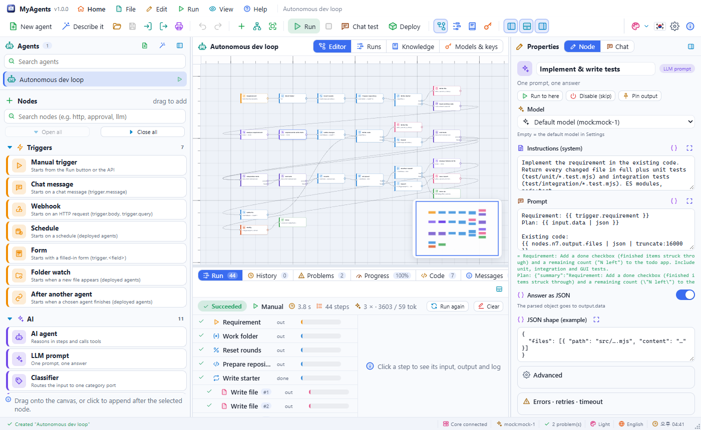
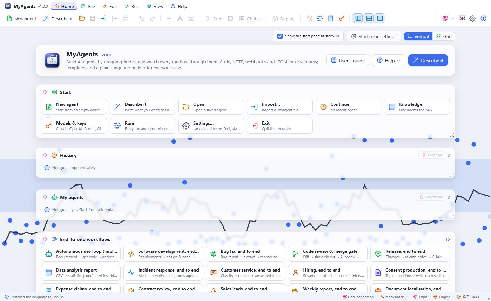
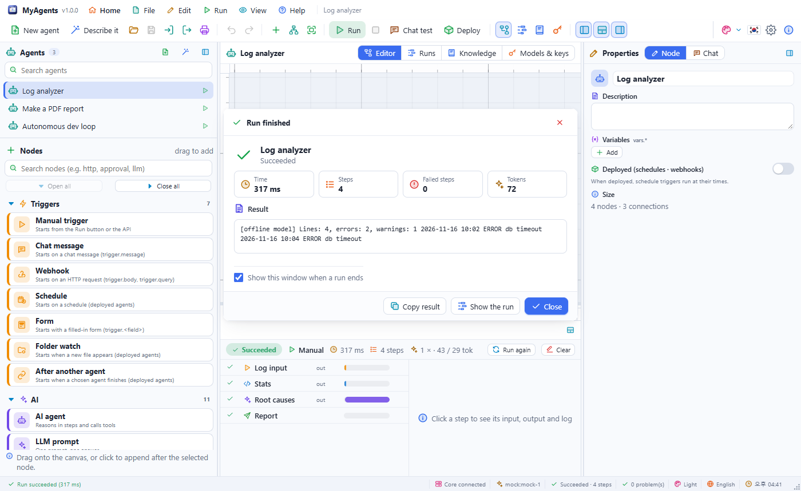
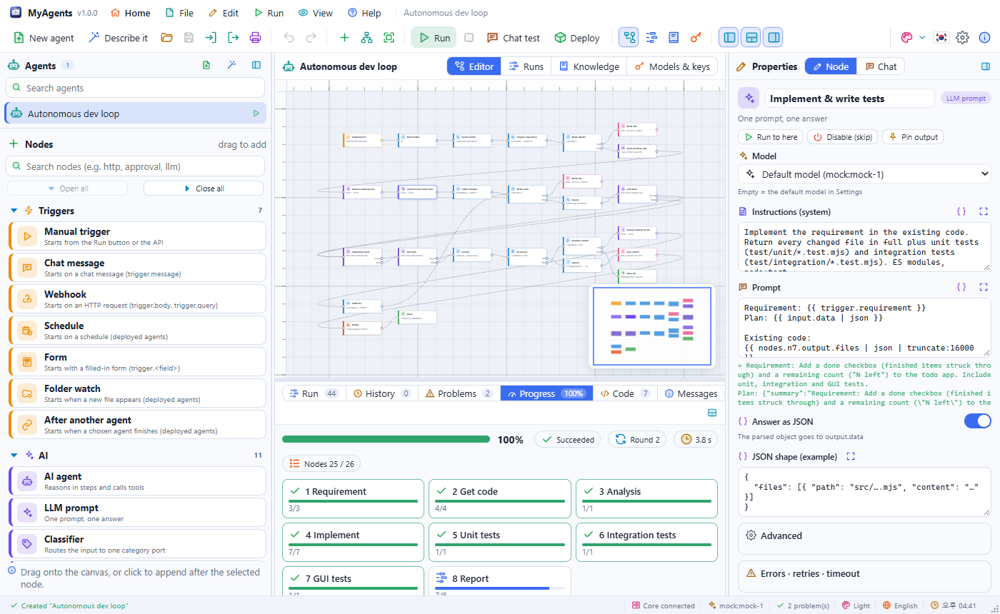
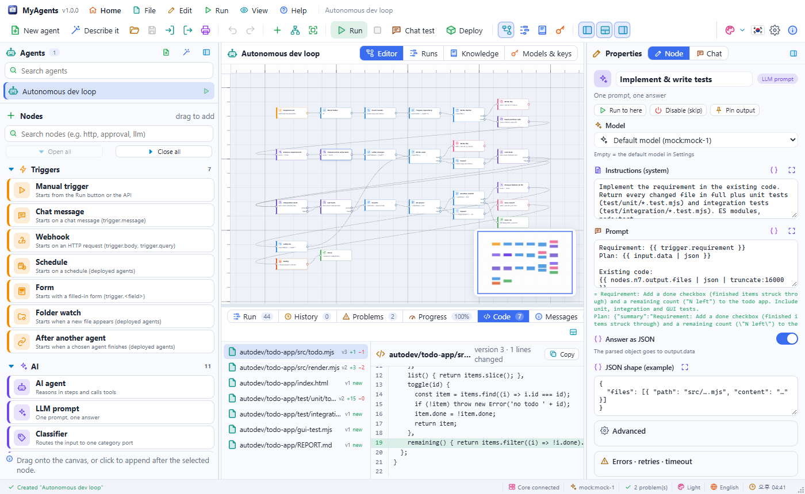
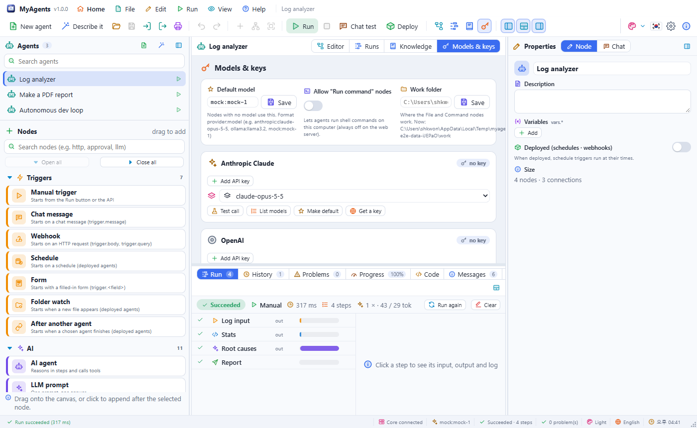
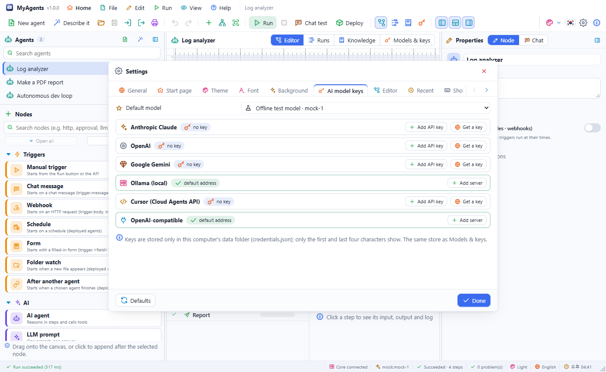
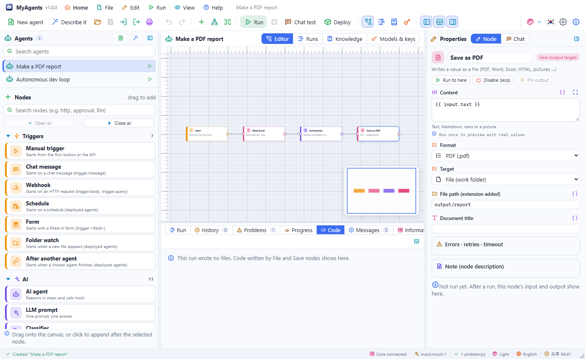
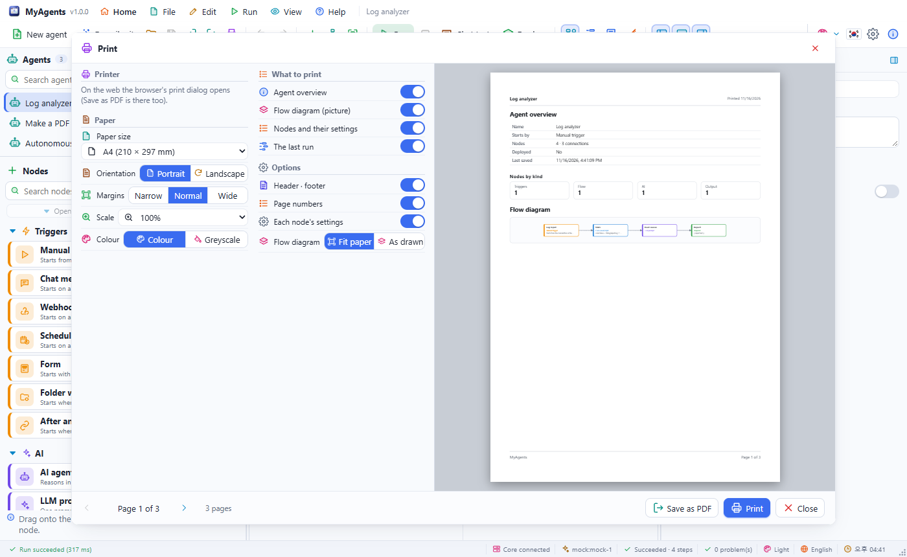
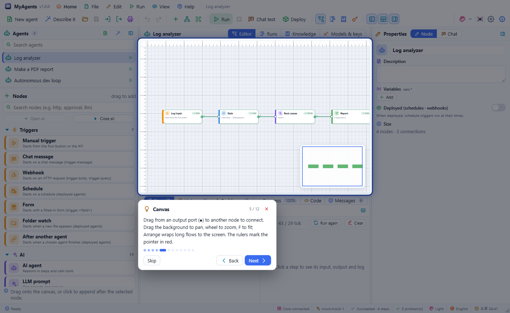

MyAgents — User’s Guide
What MyAgents is
MyAgents builds AI agents and automations by dragging nodes onto a canvas. Triggers, AI steps, tools, conditions, loops and human approval are nodes; connecting them makes a workflow. When it runs, the canvas shows which node is working, which connection the data travels, how often a loop ran and where it failed.
- Developers: a Code (JavaScript) node, HTTP requests, webhooks, JSON expressions, shell commands, each node's input and output as JSON, pinned outputs
- Office work: 16 templates, "Describe it" (write what you want, get a draft), approval steps, a chat tester
Without any key, every template runs on the offline test model. Connect real models under "Models & keys".
The window

| Where | What |
|---|---|
| Menus · toolbar | File, Edit, Run, View, Help. Run (▶), Chat test and Deploy on the toolbar |
| Left, top | Your agents (search, right-click menu) |
| Left, bottom | The node palette: drag onto the canvas, or click to append after the selected node |
| Centre | The canvas (editor) · Runs · Knowledge · Models & keys |
| Right | Node tab (the selected node's settings; with nothing selected, the agent's) · Chat tab |
| Bottom | Run (time bars per step, input · output · log, the approval card) · History · Problems · Messages · Information |
Start page

The start page is vertical by default (one card per row). Switch to "Grid" at the top right. Move cards by their handle, resize them by the bottom-right corner.
Start page: History lists the agents opened lately (✕ forgets one, "Clear all" empties the list; the agents stay); My agents deletes one agent (the bin) or all of them after a confirmation (run records stay). Folded panels keep a rail with their icon and title; the button at the right end of each panel header folds it.
Working on the canvas
- Add: drag from the palette, click a palette item, double-click the canvas, toolbar "+", key
A - Connect: drag from an output port (●) on the right of a node to another node. Dropping on empty space offers the node to add there
- Tools: draw from an AI agent's "tools" port (◆, at its bottom) to a node: that node (and the flow after it) becomes a tool of the agent. Connect other AI agents for a multi-agent team
- Move & select: drag a node; drag empty space to pan; Shift/Ctrl+drag to box-select; wheel to zoom
- Edit:
Delete,Ctrl+C/Ctrl+V,Ctrl+Dduplicate, arrow keys nudge,Ctrl+Z/Ctrl+Y - Tidy: Auto arrange (Ctrl+Shift+A), Fit (F), click the minimap
Node types
| Category | Nodes |
|---|---|
| Triggers | Manual (test input JSON), Chat message, Webhook, Schedule (minutes, daily, weekly, cron) |
| AI | AI agent (tools, memory, max steps), LLM prompt (optional JSON answer), Classifier (a port per category), Extractor |
| Knowledge | Knowledge search (RAG), Add to knowledge |
| Flow | If, Switch, Loop over items, Merge, Set variables, Text template, Code (JavaScript), Wait, Stop |
| Tools & data | HTTP request, Read web page, Call another agent, File read/write, Run command, JSON, Date & time |
| Human | Approval, Ask a person, Notify |
| Output | Respond (run result · chat reply · webhook response) |
| Notes | Sticky notes (never run) |
Every runnable node has retries, retry delay, timeout and error handling (stop the run / continue with the error as output / send to an error port).
Expressions
Write {{ … }} in a setting to use earlier values.
| Name | Meaning |
|---|---|
input | the previous node's output (LLM and agent: input.text) |
trigger | what the trigger received (chat: trigger.message; webhook: trigger.body, trigger.query) |
nodes.<node name>.output | another node's output, by name |
vars.<name> | variables (agent settings, Set variables) |
item, index | the current item and its number inside a loop |
Filters: | upper, | lower, | trim, | json, | length, | join:", ", | truncate:100, | default:"none", | pluck:"name", | first, | last, | date, | parse … a || b takes b when a is empty. After one run, each field shows a preview computed from the real values; the {} button lists the variables you can use.
Running and reading results
- Run (Ctrl+Enter) uses the manual trigger's test input; a webhook trigger asks for a request body. Unsaved changes run as they are (marked "draft" in the history)
- While it runs: the working node glows blue, finished nodes turn green (succeeded) or red (failed), waiting nodes orange. Data moves along the connections as dots; looped nodes show
×Nand ports show how often they were used; an agent shows the tool it calls above the node - Run tab (bottom): a time bar per step; click a step for its input, output and log
- Run to here (node settings): runs this node and the nodes before it only
- Pin output: a pinned node does not run again but hands on its pinned output — test later steps without API costs
- History tab / Runs view: reopening a run draws its states on the canvas
- Stop (Shift+F5)

The Progress tab shows the phases of the nodes, the round and each test node's passed / failed by round. The Code tab lists the files a run wrote with their versions and +/− lines; pick one to read it with the changed lines marked.


Human approval
At an Approval node the run pauses and the node blinks orange. In the card of the Run tab, write a comment and press Approve or Reject; the run continues on that port. With a time limit, it is rejected afterwards. "Ask a person" waits for form fields.
Chat tester
Agents with a "Chat message" trigger are tested in the right Chat tab. Every answer shows its run on the canvas; the small button on a bubble opens that run. With "Conversation memory" on, the AI agent remembers the session. "New chat" starts a new session; "Forget" deletes this agent's memory.
Webhooks and schedules (deploy)
- A saved agent with a Webhook trigger shows its webhook URL in the agent settings (right panel, nothing selected). The URL contains a secret, so no sign-in is needed; you can make a new one. The webhook answers with the result when the run ends, or at once with 202. The Respond node can set the HTTP status
- Deploy turns on schedule triggers (while the program runs). Deploying refuses an agent with errors and lists them in Problems
Knowledge bases (RAG)
Create them in the Knowledge view; add files (txt, md, html, csv, json, code …), pasted text or web pages. Documents stay on this computer and are found with BM25 keyword search (no embedding service; Korean is indexed down to two-letter pieces). "Search test" shows what an agent would find. The first start creates a sample knowledge base (refunds, shipping, support hours, API).
Models & keys
| Provider | Setting |
|---|---|
| Anthropic Claude | API key (default model claude-opus-5-5); ANTHROPIC_API_KEY is read too |
| OpenAI | API key (OPENAI_API_KEY) |
| Google Gemini | API key (GEMINI_API_KEY) |
| Ollama | local server (default http://127.0.0.1:11434), no key |
| OpenAI-compatible | LM Studio, vLLM, Groq, OpenRouter … server address and key |
| Offline test model | no network, no key; for trying templates |
"Test call" checks the connection, "List models" loads the available models, "Make default" sets the model for nodes that leave it empty. Keys are stored only in the data folder's credentials.json; the page shows four characters at each end. The same view allows "Run command" nodes and sets the work folder (used by File and Command nodes).
Local Ollama: when it is not installed, not running or lacks the chosen model, a failed test call or run opens a window that does it for you with progress: Install automatically (winget or the official installer on Windows, Homebrew on macOS, the official script on Linux), Start, or Download the model. A big model can take minutes to load the first time; the test waits without a time limit. The web server only points to the download page.
Cursor: an API key from the Cursor dashboard (CURSOR_API_KEY). Each call runs a cloud agent and returns its final text; add #https://github.com/org/repo@branch after the server address to work in that repository.

Settings › AI model keys adds, changes and deletes keys per provider and sets the default model too (the same store).

Input sources and output formats

The Read (input source) node reads a work-folder file, a URL, typed text or the previous step's value and parses it; Save (output target) writes a value as a file in the chosen format (extension added) or only hands it on (a data: URL). Text, Markdown, HTML, CSV, JSON, Excel (.xlsx), PDF (Korean included), Word (.docx) and pictures (png, jpg, gif, webp, bmp, svg) are read and written; rows become tables, Markdown becomes styled HTML, a PDF or a Word document. The Image analysis node shows a picture to a vision model.
The run result window and printing
When a run ends, a result window shows the status, time, steps, failed steps, tokens and the result (Copy result, Show the run); turn it off in Settings › Editor or with its check box. Print (Ctrl+P) opens its own window: printer and copies, paper size, orientation, margins, scale, colour, header/footer, page numbers and what to print (overview, flow diagram, nodes and settings, the last run), with a live preview. The flow diagram is laid out again for the paper ("Fit paper"). Print prints straight to the chosen printer on the desktop; Save as PDF is there too.

Tutorial
When the start page opens, a window asks "Run the tutorial?". Start the tutorial lights up each part of the window in turn (start page, templates, describe it, palette, canvas, properties, run, progress and code, chat, models and keys, print, help) and explains it; Back / Next or ← / → move, Esc ends it. Turn off "Show this window at start" in that window or Settings › Start page › "Show the tutorial popup at start" to stop it; Help › Tutorial shows it any time.

Describe it
Describe it (Ctrl+Shift+N) turns a sentence into a workflow draft. With a real model, the model designs it from the node catalogue; without, keywords decide (daily, webhook, chat, approval, summarise, translate, classify, documents, file, notify …).
Files
Agents are stored as agents/<id>.json in the data folder. Export writes a .myagent file (without the webhook secret); Import or drag and drop brings it back.
As a web server
After npm run build:web, run node server/web.js --port 8080 --password <password> and use the same app in a browser. Without a password it listens on 127.0.0.1 only. "Run command" nodes are always off on the web server.
Shortcuts
Settings › Shortcuts lists them all. Common ones: Ctrl+N new agent, Ctrl+S save, Ctrl+Enter run, A add node, F fit, Ctrl+Shift+C chat, F2 rename.